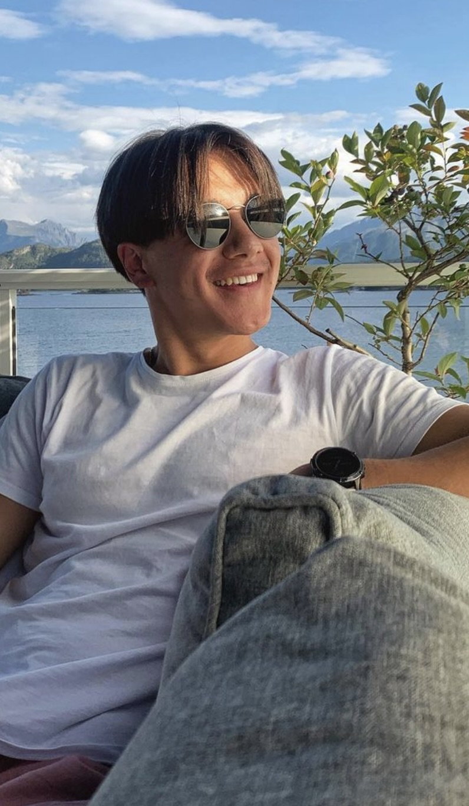
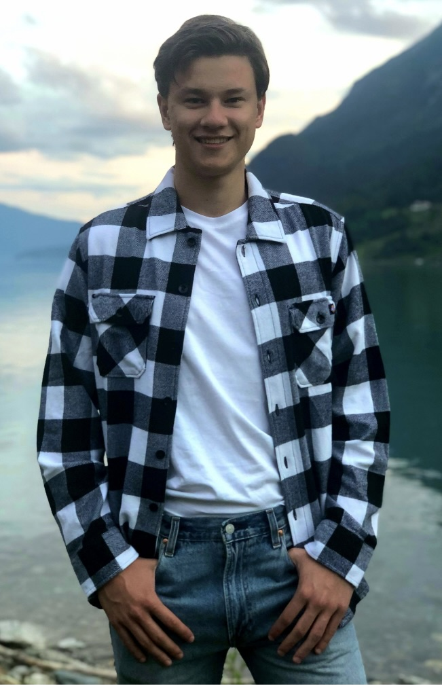
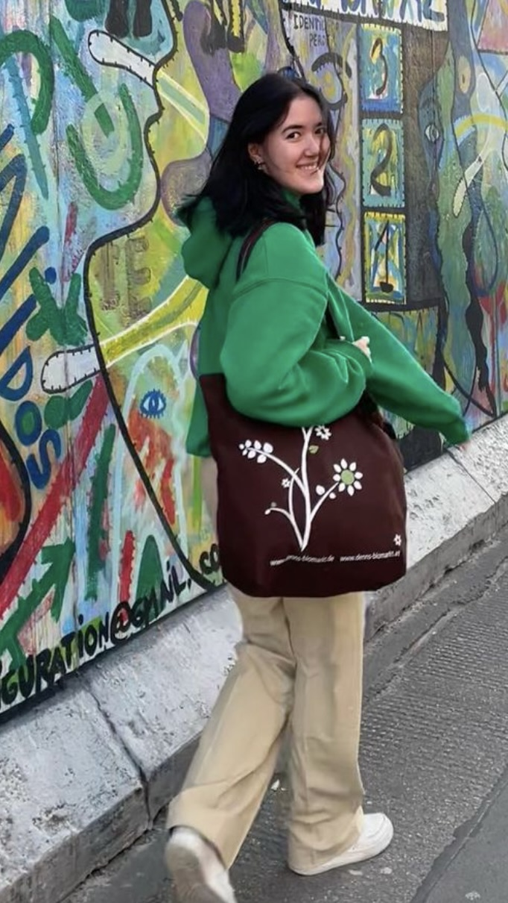
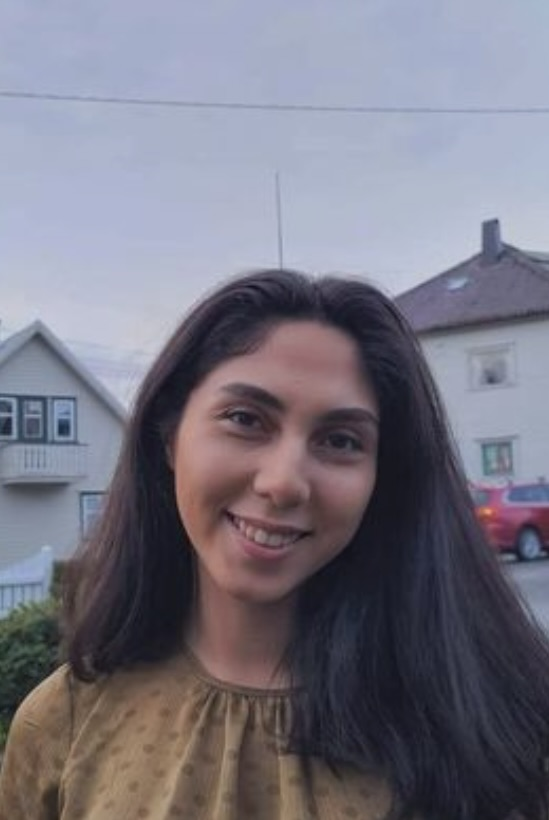

Om oss
Velkommen til Morrofilm - der filmopplevelsen står i sentrum! Siden vår oppstart har vi hatt et enkelt, men viktig mål: å levere den ultimate kinoopplevelsen for store og små. Vi forstår at et besøk til kinoen er mer enn bare en film – det er et avbrekk fra hverdagen, en sjanse til å drømme, og en mulighet til å samles med venner og familie i en felles opplevelse. Vårt dedikerte team jobber utrettelig for å sørge for at hver visning er spesiell. Fra den nyeste teknologien innen bilde og lyd til komfortable seter og en stemningsfull atmosfære, streber vi etter å overgå dine forventninger hver gang du besøker oss. Hos Morrofilm tror vi på magien av film. Så uansett om du er her for en familiefilm, en romantisk date-night, eller en actionfylt blockbuster, ønsker vi deg en uforglemmelig opplevelse med oss.
Teamet bak
Christian Stensøe - CEO
Christian går andreklasse på informatikkstudiet, kommer fra Ålesund og er vår CEO. Christian er glad i å reise, spise mat, henge med kjæresten sin og på fritiden trener han og er med i Start NTNU. Christian lever for å gjøre kundene sine fornøyde.
Henrik Solheim - CTO
Henrik går andreklasse på PowerPoint-ingeniørstudiet, der han lærer seg hvordan økonomi tilsvarer tilbud = etterspørsel og hvordan lure pengene fra fattige mennesker. Henrik kommer fra Førde, som er det minste stedet i landet en INDØKer har kommet fra noen gang. Lurer på hvordan mannen overlever med alle fra Bærum. Han har en forkjærlighet for Python og Javascript og lar ikke internsene i selskapet røre disse verktøyene, de må nøye seg med HTML og CSS.
Celina Ryholt - COO
Celina går i likhet med Henrik INDØK som fostrer frem fremtidens ledere. Ironisk nok, har ikke Celina lyst til å bli leder, men heller bli fortalt hva hun skal gjøre. Hun kommer fra Tønsberg (hyttekommunen) og trives best med å ligge litt etter i webtek og algdat. Hun er en svært viktig brikke i selskapet ved å kjefte på internsene slik at de aldri har lyst til å jobbe der igjen.
Vahideh Rezaei - CFO
Vahideh er vår CFO og har full kontroll på alle inn- og utbetalinger. Denne tilliten nøt hun godt da hun bestilte VIP bord på String showbar i Oslo, under forrige firmatur. I tillegg mangler det 40 millioner kroner fra firmaet, som mistenkes holdes skjult i skatteparadiser. Hun gjør en fantastisk jobb ved å kombinere programmering og regnskapsføring!
Herman Lous - Summer Intern

Herman er den viktigste brikken i firmaet. Han gjør alt arbeidet på front-end og er absolutt ikke ansvarlig for "om oss"-siden på nettsiden. På fritiden elsker han å løpe, henge med venner og gjøre skole. Han brenner ekstra for Start NTNU og alle timene som legges ned i det frivillige vervet gjenspeiler dette. Takk for den fantastiske jobben du har gjort denne sommeren Herman, vi kommer til å savne deg